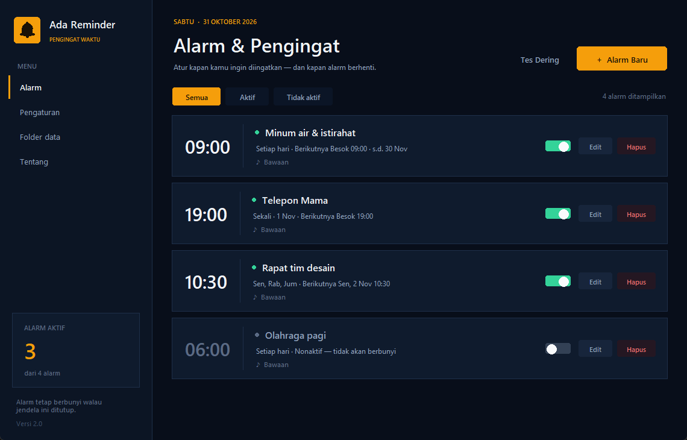
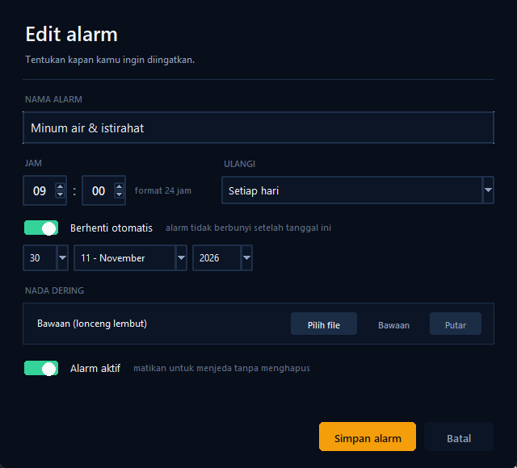
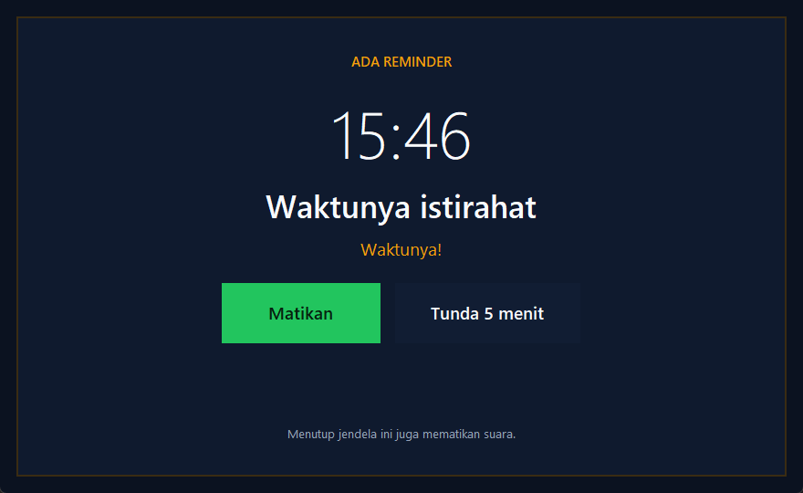

Tetap berbunyi walau ditutup
Alarm dijalankan oleh Windows Task Scheduler. Kamu boleh menutup jendela, bahkan tidak membuka aplikasinya sama sekali.
Tinggalkan alarm biasa yang mudah terlewat. Ada Reminder memakai Windows Task Scheduler, jadi pengingatmu tetap jalan — tanpa perlu aplikasi terus terbuka.

Semua fitur penting, tanpa menu yang membingungkan. Fokus pada satu hal: mengingatkanmu tepat waktu.
Alarm dijalankan oleh Windows Task Scheduler. Kamu boleh menutup jendela, bahkan tidak membuka aplikasinya sama sekali.
Pilih file WAV, MP3, WMA, M4A, atau format audio lain. Ada juga lonceng bawaan yang lembut kalau kamu ingin langsung pakai.
Buat alarm untuk satu momen penting, rutinitas setiap hari, atau jadwal mingguan seperti Senin–Jumat.
Pasang tanggal berhenti untuk alarm harian atau mingguan. Cocok untuk pengingat obat, kelas, atau program yang punya batas waktu.
Jeda alarm tanpa menghapusnya. Nyalakan lagi saat dibutuhkan — jadwal Windows ikut diperbarui otomatis.
Saat alarm berbunyi, pilih Tunda untuk beberapa menit lagi atau Matikan untuk menghentikan dering saat itu juga.
Dirancang agar kamu bisa melihat jadwal berikutnya dalam sekali pandang — tanpa rasa seperti sedang membuka software kantor.
Lihat jam, jadwal berikutnya, status aktif, dan nada dering dari setiap alarm. Filter Aktif dan Tidak aktif membantumu menemukan yang sedang dijeda.
Isi nama, pilih jam, tentukan pengulangan, lalu pilih nada dering. Semua ada di satu dialog yang ringkas — termasuk pilihan tanggal berhenti otomatis.

Saat alarm berbunyi, jendela besar muncul di atas aplikasi lain dengan pilihan Matikan dan Tunda. Suara akan berhenti saat jendela ditutup.

Tidak perlu instalasi rumit. Unduh, jalankan, buat alarm pertama, lalu tutup jendelanya. Selesai.
Ekstrak file ZIP, lalu buka Ada Reminder.exe. Tidak perlu memasang Python atau aplikasi tambahan.
Klik + Alarm Baru, isi nama dan jamnya, pilih pengulangan, lalu tentukan nada dering jika ingin.
Alarm sudah terjadwal di Windows. Kamu bisa menutup aplikasi — saat waktunya tiba, jendela dering akan muncul sendiri.
Tips: letakkan file EXE di folder tetap. Saat pertama dijalankan, Ada Reminder juga menyimpan salinan di %LOCALAPPDATA%\AdaReminder agar jadwal Windows tetap valid jika file unduhan dipindah atau dihapus.
Unduh Ada Reminder v2.0.0 untuk Windows 10/11 64-bit. Pilih Installer agar aplikasi terpasang dengan shortcut, atau ZIP/EXE untuk versi portable. Tanpa akun, tanpa langganan, dan semua data tetap di komputermu.
File belum ditandatangani digital. Jika Windows SmartScreen muncul, pilih More info → Run anyway.
SHA-256 ZIP: E95EA37BF3F28C3291730FE491CEBF3FDDFF01D09EC5FF0DB9ADEB7ACABF0B92
Windows 10 atau 11 (64-bit), ruang kosong ±15 MB, dan akses ke Windows Task Scheduler. Tidak perlu Python untuk versi EXE.
Tidak ada akun, telemetri, atau koneksi internet. Alarm dan pengaturan disimpan sebagai file JSON di folder data lokalmu.
Jalankan Jalankan Ada Reminder.bat dengan Python 3.11+ dan Tkinter. Cocok kalau kamu ingin memodifikasi kodenya.
Versi mobile dibuat dengan Flutter. Alarm sekali, harian, dan hari tertentu, tanggal berhenti otomatis, nada dering kustom, serta tombol tunda tetap ada - dengan tampilan gelap-amber yang sama seperti versi Windows.
Ponsel lama 32-bit? Unduh versi armeabi-v7a, atau APK universal (56,9 MB) yang jalan di semua perangkat.
Unduh APK, buka di ponsel, lalu izinkan pemasangan dari sumber ini. Tidak perlu Play Store, tanpa akun, tanpa iklan.
Cek keaslian file dengan checksum SHA-256 di
download/…apk.sha256.
Proyek iOS sudah disiapkan, tetapi harus dibangun dan ditandatangani
dengan Xcode di macOS. Langkahnya ada di
mobile/README.md.
Izinkan notifikasi dan "Alarm & pengingat" saat diminta. Di sebagian merek Android, matikan juga optimasi baterai untuk aplikasi ini.
Belum menemukan jawabanmu? Cek juga README.md di dalam file unduhan.
Ya. Setiap alarm membuat jadwal di Windows Task Scheduler. Windows yang memicu aplikasi pada waktu yang ditentukan, jadi jendela utama tidak perlu terbuka. Alarm juga akan tetap berjalan setelah komputermu restart.
Tidak, jika memakai file Ada Reminder.exe. Python hanya dibutuhkan jika kamu ingin menjalankan versi source lewat Jalankan Ada Reminder.bat.
WAV diputar langsung lewat Windows. Format lain seperti MP3, WMA, dan M4A diputar lewat pemutar media bawaan Windows. Setelah dipilih, file disalin ke folder data agar alarm tetap punya suara meskipun file aslinya dipindah.
Buka aplikasi, lalu hapus alarm lewat tombol Hapus di kartunya. Untuk menjeda sementara, matikan sakelar Alarm aktif. Kamu juga bisa memakai tanggal Berhenti otomatis agar alarm berhenti sendiri setelah tanggal tertentu.
Karena file belum memiliki sertifikat code signing. Ini normal untuk aplikasi kecil yang didistribusikan langsung. Klik More info, lalu Run anyway. Kamu juga bisa memeriksa checksum SHA-256 yang tertera di halaman ini.
Di %APPDATA%\AdaReminder. Isinya antara lain alarms.json, pengaturan, nada dering pilihanmu, file jadwal, dan log. Tidak ada data yang dikirim ke server.
Bisa. Saat alarm berbunyi, klik Tunda. Durasi tunda bisa diatur di menu Pengaturan (1–60 menit). Tunda membuat jadwal Windows baru, jadi tetap berfungsi meski jendela utama ditutup.
Ya. Tidak ada langganan atau fitur terkunci. Kamu bisa mengunduh, memakai, dan menyimpan aplikasinya tanpa biaya.
Unduh, buat pengingat pertamamu, lalu tutup jendelanya. Biarkan Windows yang mengingatkan.